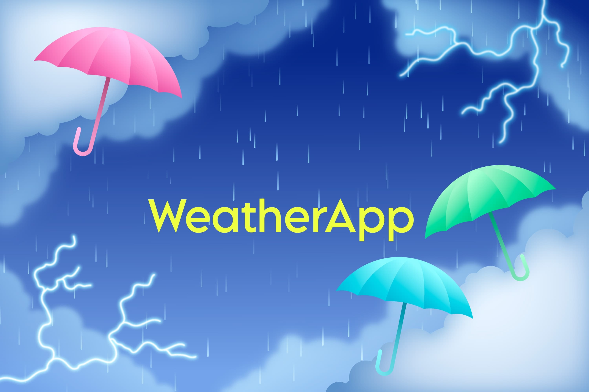

Data Analytics
Cleaning, interpreting, and analyzing data to support better decisions using Python, SQL, Excel, and business reasoning.
I’m Aashish Singh, a Management Information Systems student at Minnesota State University, Mankato. I enjoy working on analytics, software, and research projects that turn data into useful decisions.

Aspiring Data Scientist
I am currently studying Management Information Systems and building my path toward data science and analytics. My interests sit at the intersection of data, technology, and business problem-solving. I enjoy learning how tools like Python, SQL, Tableau, Power BI, and Excel can help transform raw information into decisions people can actually use.
Beyond coursework, I am involved in research and project development. One of my main ongoing projects is a Data-Driven Business Location Analyzer, which explores how competition, demographics, location factors, and weighted criteria can guide better business-location decisions.
I am actively preparing for internship opportunities where I can grow in analytics, information systems, data science, and software-related roles.
Management Information Systems student at Minnesota State University, Mankato.
Student researcher working on data-driven business analysis and application design.
Combining programming, visualization, and business thinking to solve real problems.
Cleaning, interpreting, and analyzing data to support better decisions using Python, SQL, Excel, and business reasoning.
Communicating insights with dashboards and reports in Power BI and Tableau so information becomes easier to understand and use.
Building interactive applications and websites with Python, Java, C#, HTML, CSS, and JavaScript while strengthening problem-solving skills.
An ongoing application and research-based project focused on helping evaluate business locations through weighted criteria, competition, market conditions, and decision support logic.

A weather application that uses web technologies and API integration to provide weather information in a clean interface.
A front-end travel website that highlights destinations in Nepal while demonstrating layout, styling, and responsive design skills.
A Netflix-inspired interface project created to strengthen front-end design, styling, and layout-building fundamentals.
Working on research and project development with a focus on data-driven analysis and business decision support applications.
Built and practiced front-end web development skills through projects involving HTML, CSS, JavaScript, and application logic.
Actively building a portfolio aligned with analytics, data visualization, business systems, and internship readiness.
I’m interested in opportunities related to data analytics, data science, MIS, research, and technology. Feel free to reach out.